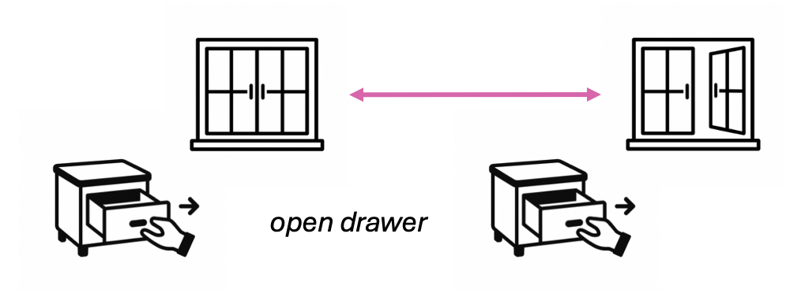
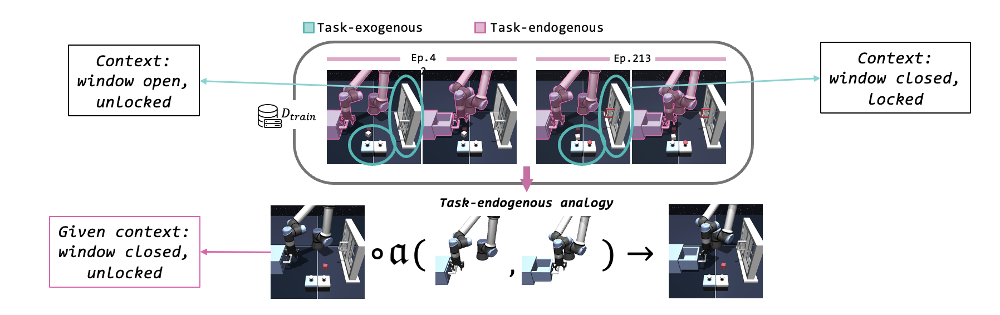
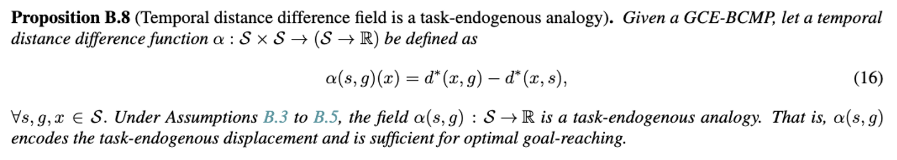
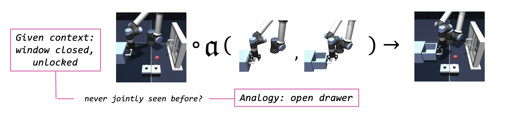
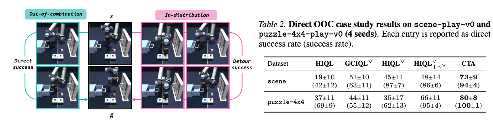
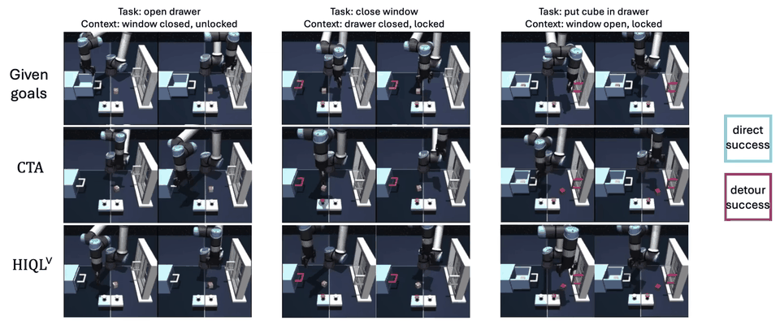
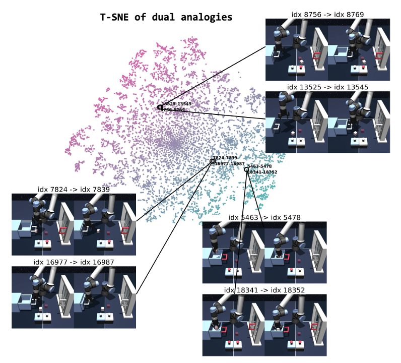

Abstract
Compositional generalization is essential for reaching unseen goals under novel contextual variations in offline goal-conditioned reinforcement learning (GCRL), where a generalist goal-reaching agent must be learned from limited data. Most prior approaches pursue this via trajectory stitching over temporally contiguous segments, which limits composing behaviors across varying contexts. To overcome this limitation, we formalize analogy transduction as synthesizing new plans by composing task-endogenous analogies with given contexts and propose a novel analogy representation tailored for it. Grounded in our theory, this analogy representation captures what changes under optimal task execution, remains invariant to contextual variations, and is sufficient for optimal goal reaching. We further contend that generalization to unseen analogy-context pairs is a practical obstacle in analogy transduction, and introduce a new approach for offline GCRL that enables analogy transduction beyond seen pairs to unseen combinations. We empirically demonstrate the effectiveness of our approach on OGBench manipulation environments, substantially outperforming prior methods that do not perform analogy transduction.
Motivation
Humans can easily reuse the same behavior across changed context. For example, we can open drawer easiliy when the drawer is open, even if we only have the experiences of opening drawer when the window is closed.

Can robots reuse past behaviors across contexts to solve the same task in a new situation?
Analogy Transduction
We first introduce a new concept analogy transduction, which we define as below:
Analogy transduction: Synthesizing a trajectory by transplanting task-endogenous analogies across contexts.

For example, the dataset may not contain any demonstration of opening the drawer when the window is closed and unlocked. However, the agent can extract the analogy for opening the drawer from demonstrations in other contexts, and apply it to the current context, where the window is closed and unlocked.
With analogy transduction, our goal is to learn a generalist goal-reaching agent with strong compositional generalization by composing diverse task-endogenous analogies and contexts.
Which properties should the task-endogenous analogy have?
We contend that the task-endogenous analogy should have the following properties:
- It should be invariant to variations in task-endogenous components.
- It should encode the task-endogenous state-goal displacement in a sufficiently informative manner.
What would be an effective analogy representation that satisfies these conditions?
Distance Difference fields as Analogies
Key insight #1: Given an optimal temporal distance \(d^*(s, g)\), a metric space \((\mathcal{S}, d^*)\), which we call temporal distance geometry, is invariant to variation in the task-exogenous components.
Here, even if the window state differs across state goal pairs, if the robot and drawer states, which are endogenous components of the task defined by the given state goal pair, are the same, then they share the same task endogenous latent state. This forms a representation that is invariant to the task exogenous context.
However, single temporal distance \(d^*(s, g)\) degenerates, since there exist lots of state-goal pairs with same temporal distance.

Key insight #2: A distance difference field \(\alpha(s,g):\mathcal{S}\to\mathbb{R}\), where \(\alpha(s,g)(x) = d^*(x, g) - d^*(x, s) \ \forall x\in\mathcal{S}\), captures the state-goal displacement in a sufficiently informative manner, which is known to identify each point \(x\).
Motivated by the prior work [1] in differential geometry, we propose to use the distance difference field \(\alpha(s, g)\) as the task-endogenous analogy representation. In our paper, we formalize the two forementioned conditions and define the task endogenous analogy. Our main proposition establishes that, under a few acceptable assumptions, temporal distance difference field is a valid task endogenous analogy. You can find the detailed theoretical analysis in our paper.

Practical Instantiation of Analogies
To represent the distance difference field with continuous state spaces, we first parameterize the temporal distance in a bilinear form \[ d^*(s, g) = \phi(s)^\top\varphi(g), \] and train each encoders \(\phi\) and \(\varphi\) with IQL objectives with modified reward \(r(s,g)=\mathbf{1}\{s \neq g\}\). \[ \mathcal{L}(\phi,\varphi)=\mathbb{E}_{(s,a,g)}\big[ \ell^\iota_2( \phi(s)^\top\varphi(g)\!-\!\bar Q(s,a,g)) \big] \] \[ \mathcal{L}(Q)=\mathbb{E}_{(s,a,s',g)}\big[ ( Q(s,a,g) \!+ \mathbf{1}_{\{s\neq g\}}\!-\!\gamma \bar \phi(s')^\top \bar\varphi(g))^2 \big] \] Then, motivated by prior work [2], we use \(\alpha^\vee(s,g):=\varphi(g)-\varphi(s)\) as a practical surrogate of the distance difference field \(\alpha(s,g)\), since it contains the distance relations with all the other \(x\). \[ \begin{aligned} \alpha(s,g)(x) &= d^*(x,g)-d^*(x,s) \\ &= \phi(x)^\top\varphi(g) - \phi(x)^\top\varphi(s) \\ &= \phi(x)^\top(\varphi(g) - \varphi(s)). \end{aligned} \] We refer to \(\alpha^\vee(s,g):=\varphi(g)-\varphi(s)\) as the dual analogy.
Compositional Transduction with Analogies
Recall that the analogy transduction refers to the synthesis of goal-reaching behavior by transplanting task-endogenous analogies across contexts.

What if the agent has never performed the corresponding task in the given context?
Key insight #3: Goal-reaching can be interpreted as an out-of-combination (OOC) extrapolation.
We tackle with this problem as an out-of-combination extrapolation, so that we could reach the goal by transplanting task-endogenous analogies to the given context, which are never observed together. In this context, we propose Compositional Transduction with latent Analogies (CTA), an effective agent for the analogy transduction that combines our insight with bilinear transduction [3]. Specifically, we parameterize goal-conditioned value function and hierarchical policy mean with bilinear transduction, \[ V(s,g)\;=\;\Omega_1(s) \boldsymbol{\cdot} \Omega_2(\alpha^\vee(s,g)), \] \[ \begin{aligned} \mu_h(s,\alpha^\vee(s,g))&=\omega_{h1}(s) \boldsymbol{\cdot} \omega_{h2}(\alpha^\vee(s,g)),\label{eq:bilinear-policy-h} \\ \mu_\ell(s,\alpha^\vee(s,g))&=\omega_{\ell1}(s) \boldsymbol{\cdot} \omega_{\ell2}(\alpha^\vee(s,g)), \end{aligned} \] and train each of them following HIQL [4]. This enables estimating values and extracting actions to out-of-combination analogy-context pairs via extrapolation.
Experiments
Experiment #1: Does CTA with dual analogies achieve competitive generalization performance?

CTA achieves the best or near-best results on six of the eight tasks and improves the overall average performance by about 42% over the strongest baseline. The symbol superscript \(\vee\) denotes a variant that incorporates the dual goal representation [2] into the original algorithm. In particular, the results in the last three columns suggest that the generalization performance of CTA comes not from the dual goal representation itself, but from analogy transduction. Remarkably, the gains are most pronounced on puzzle environments, where the exponentially large state space makes compositional generalization critical.
Experiment #2: Are CTA’s compositional generalization gains genuinely driven by OOC extrapolation?
To test whether CTA indeed extrapolates to OOC context–task pairs, we construct direct OOC case studies on scene and puzzle-4x4 by holding out three context-task pairs for scene and five for puzzle-4x4 pairs from training and evaluating them at inference. For example, one held-out scene pair requires opening the drawer when the window is closed and unlocked and the drawer is closed. Since the goal can still be achieved through an indirect in-distribution sequence. We report a direct success rate, which counts only trajectories that solve the intended held-out task directly.

CTA achieves the highest direct success and success rates in both environments, suggesting that baselines often prefer indirect in-distribution executions, whereas CTA directly solves unseen context–task combinations more reliably through analogy transduction.

Experiment #3: Do our dual analogies indeed capture task-endogenous displacements?
To qualitatively verify that the dual analogies capture task-endogenous displacements, we sample 20,000 state-goal pairs \((s, g)\) from the re-collected validation split of scene-play and visualize dual analogies \(\alpha^\vee(s, g)\) using a 2D t-SNE projection. We can see that similar task analogies lie close to one another in the latent space, so we conclude the dual analogy indeed capture task-endogenous displacements.

scene-play-v0
puzzle-4x4-play-v0
References
[2] S. Park et al., “Dual Goal Representations”, in ICLR, 2026.
[3] A. Netanyahu et al., “Learning to Extrapolate: A Transductive Approach”, in ICLR, 2023.
[4] S. Park et al., “HIQL: Offline Goal-Conditioned RL with Latent States as Actions”, in NeurIPS, 2023.